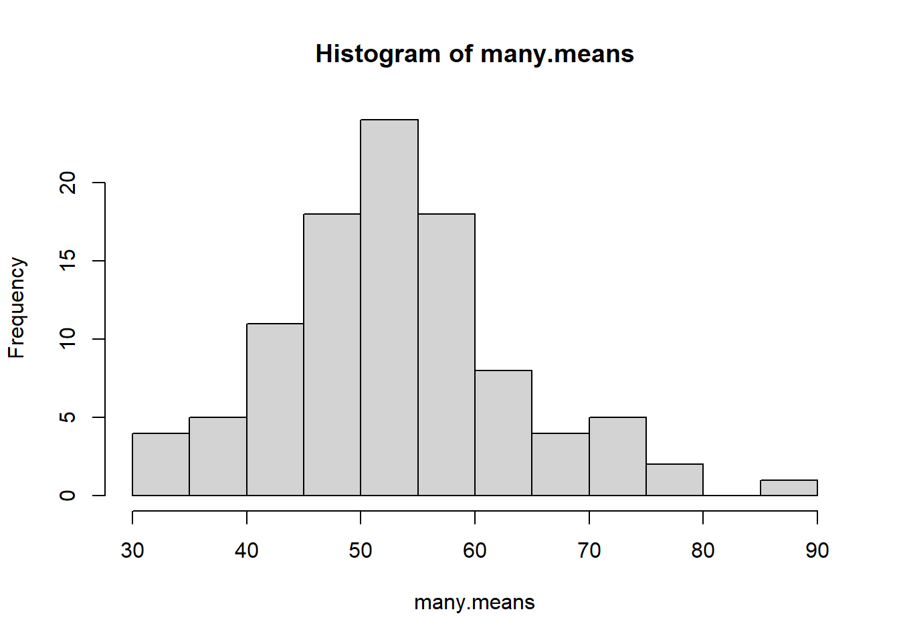

sum.of.squares <- function(x,y){
x^2 + y^2
}Introduction to Simulation
Writing your own custom functions in R, and using them to generate simulations and sampling distributions.
Writing your own R functions
Abstracting your code into many small functions is key for writing nice R code. Many people are initially reluctant to create their own functions. R has many built in functions and you can access many more by installing new packages. So there is no doubt that you are already using functions. This section will show you how to write your own functions.
Writing a custom function is similar to writing down a mathematical formula with variables. Here is an example function called sum.of.squares which requires two arguments and returns the sum of the squares of these arguments.
Once you run this code chunk the function is now available, like any of the built in functions within R. Try running sum.of.squares(3,4) in your console.
sum.of.squares(3,4)[1] 25The procedure for writing any other functions is similar and involves three key steps:
- Define the function
- Load the function into the R session
- Use the function
Defining functions
Functions are defined by code with a specific format:
function.name <- function(arg1, arg2, arg3=2, ...){
newVar <- sin(arg1) + sin(arg2) # do some useful stuff
newVar/ arg3 # the result of the last line is the returned value
}Terminology:
function.nameis the function’s name. This can be any valid variable name but you should avoid using names that are used elsewhere in R.arg1,arg2,arg3are the arguments of the function. You can write a function with any number of arguments. - Arguments are the needed in order to make the function run. For instance, for thesum.of.squaresfunction, x and y are the two arguments because R needs two numbers in order to make the function work.- You can find out the default arguments for any base R function in the help file.
- Function body: The function code between the
{}brackets is run every time the function is called. This code might be very long or very short. - Return value: The last line of code is the value that will be returned by the function.
- Load the function: For R to be able to execute your function, it needs first to be read into memory. Similar to loading a library, until you do it functions contained within it cannot be called.
- To run a function you highlight the function and run it. Once you run it you don’t need to run it again.
- Using your function: You can now use your function. You just need to give the proper arguments and the function will return the desired value(s). This may also be called “calling” your function.
Simulation
What is Simulation?
Simulation is a way to use high-speed computer power to substitute for analytical calculation. The law of large numbers tells us that if we observe a large sample of i.i.d. random variables with finite mean, then the average of these random variables should be close to their true mean. If we can get a computer to produce such a large i.i.d. sample, then we can average the random variables instead of trying to calculate their mean analytically. Simulations can be useful to check assumptions, examine a sampling distribution, or check the validity of the CLT in certain scenarios.
Notes on the Uniform Distribution https://math350.netlify.app/notes/cn4_5_unif_exp
Example: Finding the mean of a distribution.
The mean of the Uniform distribution on the interval [0,1] is known to be 1/2. How could we have found that out if we did not know the functional form of the uniform distribution?
- Create a large random sample from a Uniform distribution on the interval [0,1]
- Calculate the observed mean of that sample.
samp.unif <- runif(10000, 0, 1) # runif(n, min, max)
mean(samp.unif)[1] 0.5006375Why is simulation useful?
Statistical simulations are used to estimate features of distributions such as means of functions, quantiles, and other features that we cannot compute in closed form. When using a simulation estimator, it is good to compute a measure of how precise the estimator is, in addition to the estimate itself.
Simulation is a technique that can be used to help shed light on how a complicated system works even if detailed analysis is unavailable. For example, engineers can simulate traffic patterns in the vicinity of a construction project to see what effects various proposed restrictions might have. Statistical simulations are used to estimate probabilistic features of our models that we cannot compute analytically.
Example: Server wait time
Two servers A and B in a fast food restaurant start serving customers at the same time. They agree to meet for a break after each of them has served 10 customers. Presumably, one of them will finish before the other and have to wait. How long, on average, will one of the servers have to wait for the other?
Suppose that we model all service times, regardless of the server as a random variable with an exponential distribution with parameter 0.3 customers per minute (\(Exp(.3)\)). The time it takes one server to serve 10 customers would follow a gamma distribution with parameters 10 and 0.3 (\(Gamma(10, .3)\)).
Let \(X\) be the time it takes \(A\) to serve 10 customers, and let \(Y\) be the time it takes server \(B\) to serve 10 customers. We are asked to compute the average difference in times, which is written as
\[ E(|X-Y|) \]
The most straightforward way of finding this mean analytically would require a two-dimensional integral over the union of two non-rectangular regions.
On the other hand, a computer can provide us with as many independent gamma random variables as we desire. We can then obtain a pair \((X,Y)\) and compute \(Z=|X-Y|\). We can repeat this process many times (10000 in the example below) and get an average of all the observed \(Z\) values.
X <- rgamma(10000, 10, .3)
Y <- rgamma(10000, 10, .3)
Z <- abs(X-Y)
mean(Z)[1] 11.76764Assessing Uncertainty about Simulation Results
An important part of simulation is to assess the uncertainty in simulations. Even if we did a large number of simulations, if we repeated the simulation process we would get slightly different results. This is because a simulator estimator is a random variable. The smaller the simulation variance is the more certain we can be that our estimator is close to the parameter. A measure that is commonly used to judge the uncertainty of simulation is called the simulation standard error.
sd(Z)/length(Z)[1] 0.0009147256Statistical Inference
Statistical inference centers around using information from a sample to understand what might be true about the entire population of interest. If all we see are the data in the sample, what conclusions can we draw about the population? How sure are we about the accuracy of those conclusions?
On April 29, 2011, Prince William married Kate Middleton in London. The Pew Research Center reports that 34% of US adults watched some or all of the royal wedding. How do we know that 34% of all US adults watched? Did anyone ask you if you watched it? In order to know for sure what proportion of US adults watched the wedding, we would need to ask all US adults whether or not they watched. This would be very difficult to do. As we will see, however, we can estimate the population proportion parameter quite accurately with a sample statistic, as long as we use a random sample. In the case of the royal wedding, the estimate is based on a poll using a random sample of 1006 US adults.
- Statistical inference: The process of drawing conclusions about the entire population based on the information in the sample.
- Parameter: A number that describes the entire population. \(\mu\), \(p\), \(\tau\)
- Statistic: A number calculated from a sample. \(\bar{x}\), \(\hat{p}\), \(\hat{\tau}\).
Generally our goal is to know the value of the population parameter exactly but this usually isn’t possible since we usually cannot collect information from the entire population.
Instead we can select a sample from the population, calculate the quantity of interest for the sample, and use this sample statistic to estimate the value for the whole population.
The value of a statistic for a particular sample gives a point estimate of the population parameter. If we only have the one sample and don’t know the value of the population parameter,
this point estimate is our best estimate of the true value of the population parameter.
Variability of Sample Statistics: We usually think of a parameter as a fixed value while the sample statistic is considered a random variable.
Along with the point estimate we also want to know how accurate we can expect the point estimate to be. In other words, if we took another random sample of the same size from the population, is the point estimate from this new sample likely to be similar to the first point estimate or are they likely to be far apart.
Example: Enrollment in Graduate Programs in Statistics
Graduate programs in statistics often pay their graduate students, which means that many graduate students in statistics are able to attend graduate school tuition free with an assistantship or fellowship. There are 82 US statistics doctoral programs for which enrollment data were available. The data set StatisticsPhD lists all these schools together with the total enrollment of full-time graduate students in each program in 2009.
❓ What is the average full-time graduate student enrollment in US statistics doctoral programs in 2009?
I don’t feel like loading packages in this page so I’m using the
:: shortcut method to access the here and read_csv functions to load in the data.stat.phd <- readr::read_csv(here::here("data", "StatisticsPhD.csv"))
head(stat.phd) #always look at your imported data to check for import errors# A tibble: 6 × 3
University Department FTGradEnrollment
<chr> <chr> <dbl>
1 Baylor University Statistics 26
2 Boston University Biostatistics 39
3 Brown University Biostatistics 21
4 Carnegie Mellon University Statistics 39
5 Case Western Reserve University Statistics 11
6 Colorado State University Statistics 14mean(stat.phd$FTGradEnrollment)[1] 53.53659Based on the data set, the mean enrollment in 2009 is 53.54 full-time graduate students. Because this is the mean for the entire population of all US statistics doctoral programs for which data were available that year, we have that \(\mu=53.54\) students.
⭐ Take a random sample of 10 programs from the data file and calculate the mean.
my.sample.programs <- sample(stat.phd$FTGradEnrollment, size=10)
mean(my.sample.programs)[1] 37.7Knowing the behavior of of repeated sample statistics (like the mean in the prior example) is critically important. Let’s dig into this a little more.
Using R we can treat the data set as our population and take repeated samples of size 10 from the population, each time calculating the sample mean. We can accomplish this by using the replicate function in the following manner:
- define the number of repeated samples we want to take (
n=100) - Copy the code we used above to take a sample of size 10, and calculate the mean, and put it inside braces
{} - Save this result by assigning the results of
replicateto an object.
😢 Getting an error? Take a step back and first use a n=5, and DONT assign it to an object. Visually see with your eyes what the result of the
replicate function gives you. Then once that is working, you can increase the number of replications, assign it as an object and explore the object.many.means <- replicate(n=100, {
my.sample.programs <- sample(stat.phd$FTGradEnrollment, size=10)
mean(my.sample.programs)
})Let’s visualize the behavior of the many sample means.
hist(many.means)
summary(many.means) Min. 1st Qu. Median Mean 3rd Qu. Max.
31.60 46.10 52.00 52.88 56.88 87.30 Characteristics of this distribution:
- Shape: The distribution of average enrollment isn’t quite normal, there seems to perhaps be two peaks?
- Center: The average enrollment is 52.88
- Spread: Average enrollment ranges from 31.6, 87.3.
🎉 We have just examined a sampling distribution of the sample mean.
Sampling Distribution
A sampling distribution is the distribution of sample statistics computed for different samples of the same size from the same population. A sampling distribution shows us how the sample statistic varies from sample to sample.
Confidence Intervals
In general, it is usually not enough to just give a point estimate when estimating a population parameter. Why?
Standard Error
The standard error of a statistic is the standard deviation of the sample statistic. It tells us how much the sample statistic will vary from sample to sample. In situations like above where we can examine simulated values of the sample statistic we can estimate the standard error by taking the sample standard deviation of the simulated sample statistics. In other situations we can use mathematical formulas to calculate the standard error.
Example Grad program example cont.
Estimate the standard error for the mean enrollment in statistics PhD programs for a sample size of 10 and also a sample size of 20.
I used the base pipe
|> here to pass the results of the replicate function into the sd() functionsd(many.means) #because the example above already had n=10[1] 10.21871replicate(n=100, {
my.sample.programs <- sample(stat.phd$FTGradEnrollment, size=20)
mean(my.sample.programs)
}) |> sd()[1] 6.979404When the distributions are relatively symmetric and bell-shaped, the 95% rule tells us that approximately 95% of the data values fall within two standard deviations of the mean. Applying the 95% rule to sampling distributions, we see that about 95% of the sample statistics will fall within two standard errors of the mean. We use this rule many times to form what we call a 95% confidence interval which gives us a range for which which we are quite confident that captures the true parameter we are trying to estimate.
When using a formula to calculate an approximate 95% confidence interval, use \(2*SE\) as the margin of error.
CI for PhD program enrollment
Based on our example, what would be a 95% confidence interval for \(\mu\) the true mean total enrollment for PhD programs in statistics. Interpret this confidence interval in context of the problem.
Wrapping the entire line of code in
() will execute that code AND print out the results. This lets me see the results in the rendered document AND store the results in an object to call later, like in my sentence response below.(LCL <- mean(many.means) - 2*sd(many.means))[1] 32.44158(UCL <- mean(many.means) + 2*sd(many.means))[1] 73.31642Every time I compile these notes, I draw a different sample and will get a different numbers. To avoid conflicts in my written response, and what the code shows, I use inline R code here. See the RStudio Help –> Markdown Quick Reference for more information.
We can be 95% confident that the true mean total enrollment for PhD programs in statistics is covered by the interval (32.4 , 73.3).
Wrap up
Much of the rest of the course will be using derived formulas for different sampling scenarios to create confidence intervals for parameters.